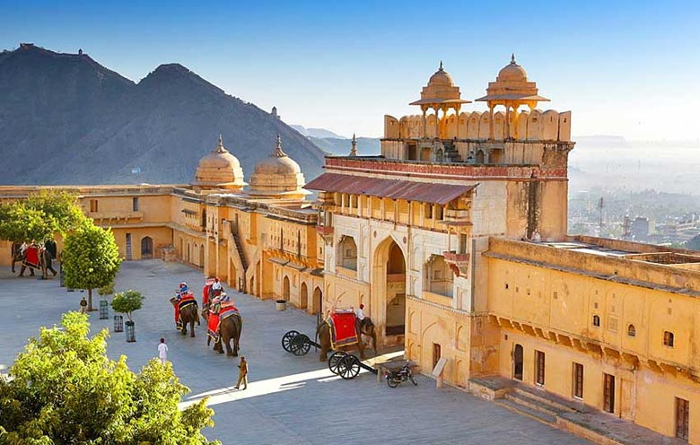
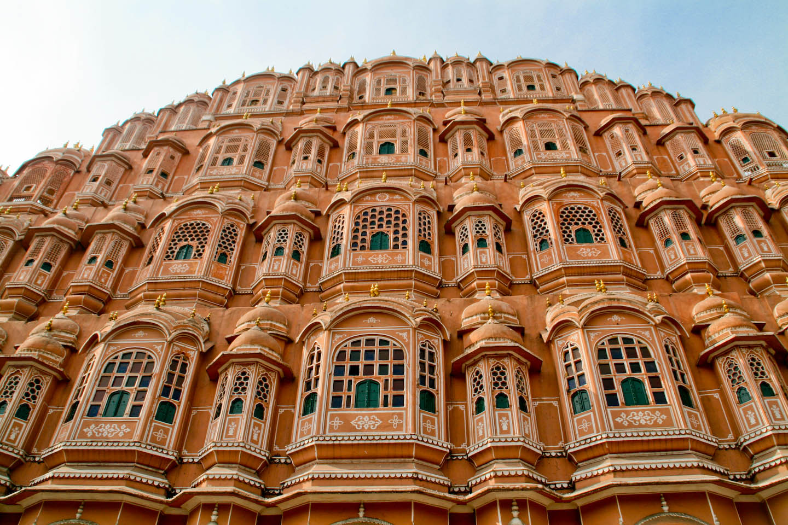
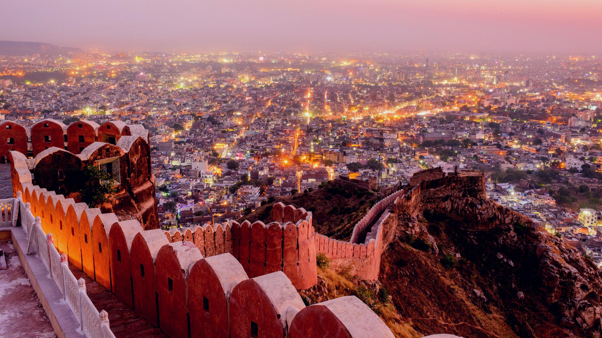
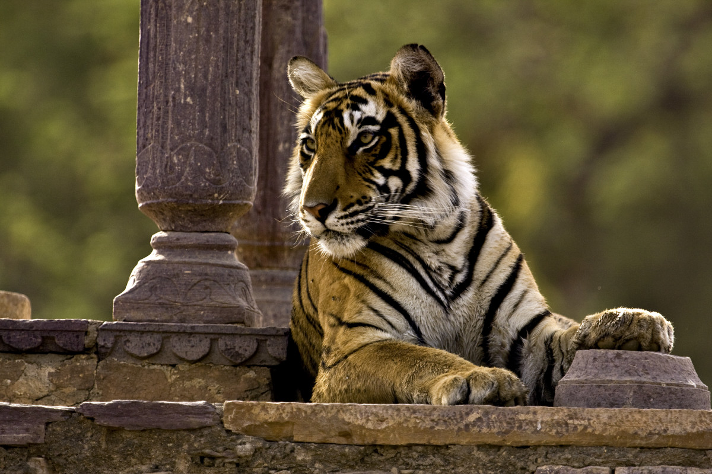

Amer Fort
Amer Fort or Amber Fort is a fort located in Amer, Rajasthan, India. Amer is a town with an area of 4 square kilometres located 11 kilometres from Jaipur, the capital of Rajasthan. Located high on a hill, it is the principal tourist attraction in Jaipur. Amer Fort is known for its artistic style elements.

Hawa Mahal
The Hawa Mahal is a palace in the city of Jaipur, India. Built from red and pink sandstone, it is on the edge of the City Palace, Jaipur, and extends to the Zenana, or women's chambers.

Nahargarh Fort
Nahargarh Fort stands on the edge of the Aravalli Hills, overlooking the city of Jaipur in the Indian state of Rajasthan. Along with Amer Fort and Jaigarh Fort, Nahargarh once formed a strong defence ring for the city.
Jaigarh Fort
Jaigarh Fort is situated on the promontory called the Cheel ka Teela of the Aravalli range; it overlooks the Amer Fort and the Maota Lake, near Amer in Jaipur, Rajasthan, India. The fort was built by Mirza Raja Jai Singh in 1726 to protect the Amer Fort and its palace complex and was named after him.
